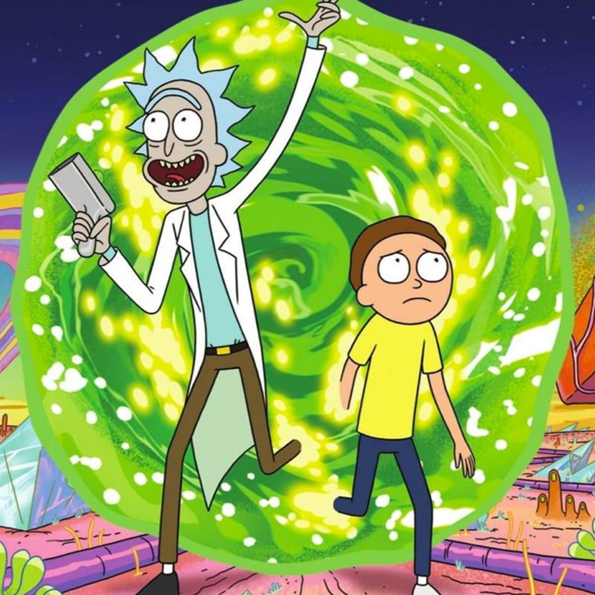

Joker

Nunca te olvides de sonreir. Por que a nadie le importa como te sientes sino como te ves.
¿Por qué tenerle miedo a la muerte? Si es lo único seguro que uno tiene.
Este texto fue extraído de la fuente Joker
Rick & Morty
 Escuchen, no soy el hombre mas amable del universo, por que soy el mas inteligente. Y ser amable es algo que la gente estúpida hace
para mejorar sus opciones
A veces la ciencia es mas arte que ciencia. Muchas personas no entienden eso.
Para ver mas BREEEP! frases, haz click en este link!- Rick Sanchez